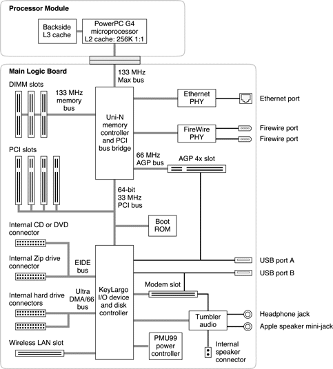

|
PATH |


Figure 2-1 is a simplified block diagram of the Power Mac G4 computer. The diagram shows the main ICs and the buses that connect them together.
The architecture of the Power Mac G4 is based on the PowerPC G4 microprocessor and two custom ICs: the Uni-N memory controller and bus bridge, and the KeyLargo I/O controller.
Figure 2-1 Simplified block diagram
The Power Mac G4 has four separate buses, not counting the processor's dedicated interface to the backside cache.
The remainder of this chapter describes the architecture in three sections centered around the processor module, the Uni-N memory controller and bridge IC, and the KeyLargo I/O controller IC.